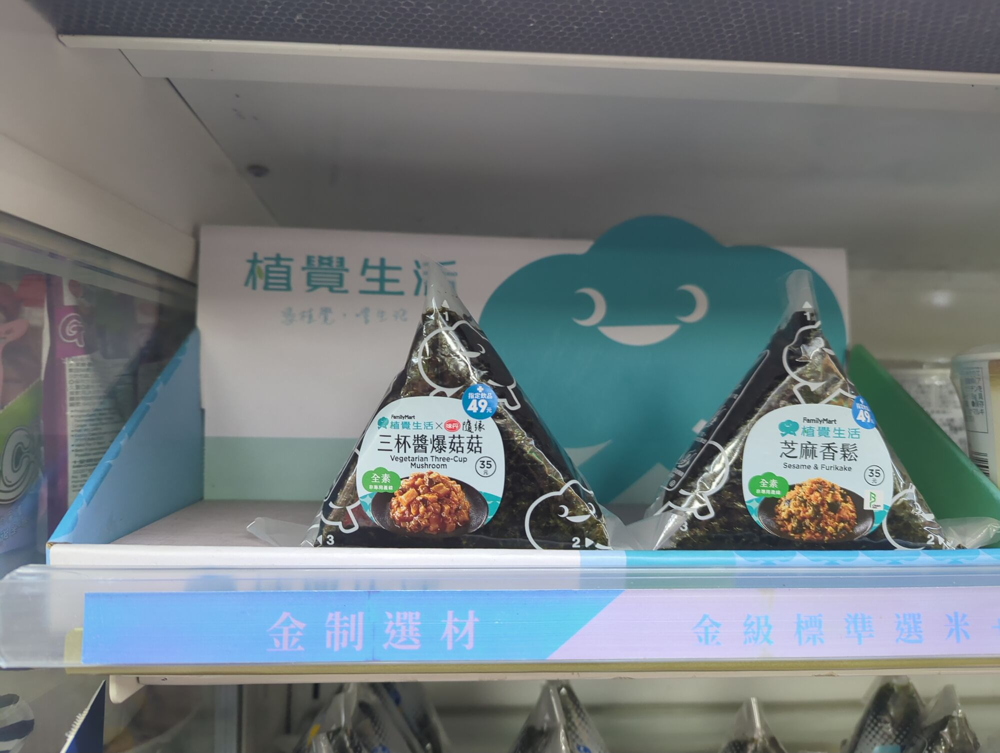
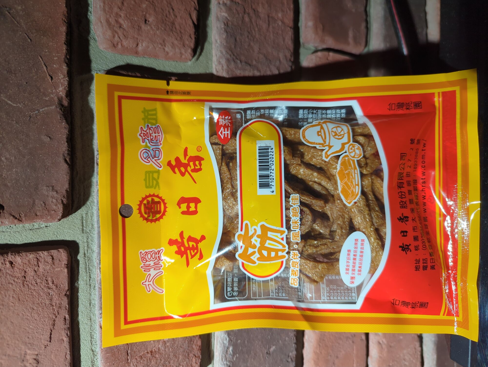

2026年1月24日
（我写中文写得不太好，请原谅我！）
我是纯素食者，已经吃纯素两年了。我这两年去过日本和中国大陆玩，也玩得很开心，但说实话再吃的方面有点失望。
- 在日本找到一家纯素的饭馆其实不难，不过在路上或在商店里买纯素的食品有点难。日本菜好像都有鱼，真可惜。
- 在中国大陆呢，我以为吃纯素应该很容易。结果，很多汤里都有鸡精之类的，大部分中国人好像也不知道有“纯素”这个东西。虽然在佛教寺附近很容易找到纯素饭馆，但是除了这一点以外，中国大陆对纯素食者不太方便。在超市连很多豆奶因为加了奶粉也不是纯素的。真可惜。
我最近去了台湾玩。根据我在东亚旅游的经验，我以为在台湾吃纯素应该很难。结果我发现，对纯素食者来说，台湾好像是最适合纯素食者旅游的地方！这是为什么？我们考虑一下台湾的特色：
- 很多台湾人因为佛教的原因吃素，特别是老人，应该比中国大陆多一些。
- 很多台湾人因为健康或者口味的原因有时候也会吃素，跟中国大陆差不多。
- 可能因为西方的影响，在台湾很多年轻人吃纯素，而且大部分台湾人也知道“全素”这个词，也就是纯素。这点在中国大陆比较少见。
- 台湾有很多小吃店，也有夜市，所以不管你想吃什么，很容易找到合适的地方吃饭。
因为这些原因，台湾有好多纯素饭馆。我在台湾时有的时候不知道该选哪一家去吃饭，有点烦恼，因为选择太多了！无论你在台北还是在农村，附近一定有一家素食或纯素食饭馆。
台湾有很多合适纯素食者的选择：
- 很多又新又漂亮的有机纯素饭馆，菜单上写着每一个原料，跟欧美的很多纯素饭馆差不多，但也挺贵的。
- 很多小小的纯素食饭馆，老板常常是佛教徒，外面也常常写着“素卍食”。我特别推荐这种饭馆，因为满好吃，而且比前面那种便宜很多。
- 一家连锁纯素食饭馆：妙观音素食（繁体字：妙觀音素食）。在其他地方，我从来没有见过一家连锁纯素食饭馆。
- 纯素的冰淇淋小吃店。我也从来没有遇到过这种。
- 素食自助餐。美国应该没有这样的餐馆！素食自助餐饭馆又好吃又便宜。不过，有的东西是蛋奶素，不是纯素，从外表看不出来，所以要问一下。
- 每一家超市都有纯素的干豆腐。也不用看原料，因为上面写着“全素”。80克（蛋白质24克）只要50新台币。在中国大陆有点难找到纯素的干豆腐。在美国呢，一包只有10克蛋白质的干豆腐要7美元，只有钱人买得起。
- 纯素的小吃在便利店。跟日本一样，台湾有很多便利店。我很推荐FamilyMart（又名“全家”），因为这家便利店对纯素食者很好。每个分店都有纯素的日式饭团、稻荷寿司和包子。上面也写着“全素”。台湾有很多家全家，所以总有一家在附近。如果你在路上饿了，只要进去买一份日式饭团，35新台币，就好了。记住：进7-11找纯素食品完全不值得！
为公平起见，我应该写清楚台湾对纯素食者的缺点：
- 很多普通的饭馆没有好的纯素选择。当然，白饭总是有的！
- 大部分奶茶店还没有植物奶。
- 在超市里，很多在美国是纯素的东西，在台湾常常不是纯素的。比方说面包、果汁、黑巧克力、洗衣液、洗手液等等。
- 台湾有很多关于素食的词：
- 素
- 全素
- 纯素
- 五辛素
- 蛋奶素
- 植物
说实话，我还是不太清楚些词的意思。比方说，全素的能不能有五辛？全素和纯素的意思一样吗？我觉得大部分台湾人也不太清楚。不过，如果在菜单上写着“全素”、“纯素”或者“植物”，你就放心，应该是纯素的！
虽然台湾有这些问题，我还是认为台湾是最适合纯素食者旅游的地方。当我发现这一点时，我有点吃惊，因为我以前从来没听说过台湾是这样的。如果你吃纯素，我非常推荐你去台湾旅游！
全家便利店的纯素日式饭团：

干豆腐：
